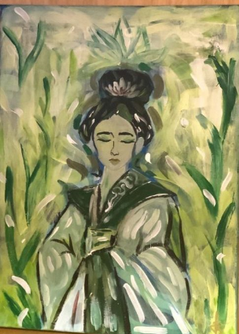
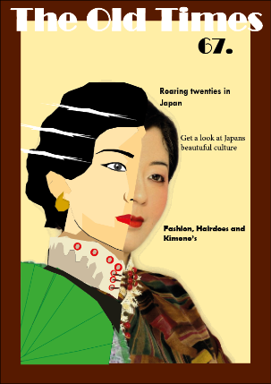
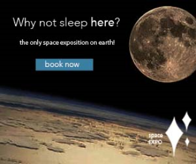
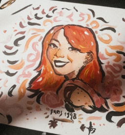
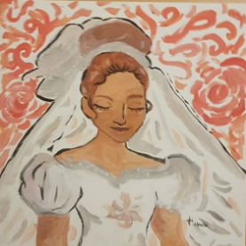
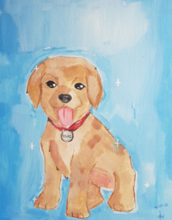

Mijn werk






De dingen die ik tot nu toe heb geleerd is hoe deze programma's werken:
- Illustrator
- Photoshop
- Indesign
Ik vind het best leuk om al deze nieuwe dingen te leren! De middelste "The old times" magazine is een soort van combinatie gemaakt met Indesign en Illustrator. Ik vond deze het leukst eruit zien en daarom staat hier er ook tussen. De drie rechter plaatjes zijn web-banners die ik heb gemaakt in Photoshop en Illustrator.